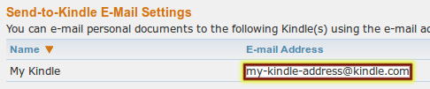
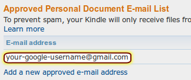

Frequently asked questions
This page covers a number of questions that may arise before or while you're using Dontprint. If your question is not answered on this page (and only then!) you can get personal support.
About Dontprint
What is Dontprint?
Dontprint makes it easy to send PDF documents, such as scientific articles, in an optimized layout to your e-reader device.
With Dontprint, sending scientific articles to your e-reader is even easier than printing them on a traditional printer.
When you come accross the web page of a scientific article from any mayor publisher a Dontprint icon ( ) will appear in the address bar.
With a single click on that icon, Dontprint downloads the PDF file of the article, reformats it so that you can read it comfortably on the e-book reader's smaller screen, and sends it to your device.
) will appear in the address bar.
With a single click on that icon, Dontprint downloads the PDF file of the article, reformats it so that you can read it comfortably on the e-book reader's smaller screen, and sends it to your device.
For a full demonstration of Dontprint's features, go to the feature tour.
If you are a scientist and read a lot of articles from scientific journals then Dontprint is exactly right for you.
Dontprint knows how to interpret the websites of many popular scientific journals and preprint servers.
When you browse to a web page that represents a scientific article a small Dontprint icon ( ) will appear in the address bar.
When you click this icon Dontprint will download the PDF document of the article, optimize the layout so that you can read the article comfortably on a small screen and then send the article to your e-reader.
The layout optimizer even knows how to handle multi-column articles with figures and complicated equations.
) will appear in the address bar.
When you click this icon Dontprint will download the PDF document of the article, optimize the layout so that you can read the article comfortably on a small screen and then send the article to your e-reader.
The layout optimizer even knows how to handle multi-column articles with figures and complicated equations.
Dontprint may also be useful to you if you are not a scientist but you sometimes come accross PDF documents which you would like to read on your e-reader. You can use Dontprint with any PDF document that's either on your computer or that you come accross on the web. The optimization of the layout for a small e-reader screen works best for PDF documents that contain mainly text.
In addition to the layout optimizations, using Dontprint is much simpler than sending articles manually by e-mail to your e-reader.
Without Dontprint, you would have to download an article, switch to your e-mail application, compose a new message, add an attachment, locate the downloaded article in your file-system and finally send the message.
If you install Dontprint, it will add a small icon ( ) to your web-browser's address bar whenever you're reading the abstract of some article from a scientific journal or a preprint server.
Just click that icon and the article will automatically be downloaded, converted, and sent to your e-reader.
That's even easier than printing on a traditional printer!
Of course, you can also use Dontprint to send PDF documents that are already stored on your computer.
) to your web-browser's address bar whenever you're reading the abstract of some article from a scientific journal or a preprint server.
Just click that icon and the article will automatically be downloaded, converted, and sent to your e-reader.
That's even easier than printing on a traditional printer!
Of course, you can also use Dontprint to send PDF documents that are already stored on your computer.
In case you're interested in the details: Dontprint internally uses a third-party tool called "k2pdfopt" to optimize the layout of articles and some of the functionality developed for Zotero to detect and parse journal websites.
This program is distributed in the hope that it will be useful, but WITHOUT ANY WARRANTY; without even the implied warranty of MERCHANTABILITY or FITNESS FOR A PARTICULAR PURPOSE. See the GNU Affero General Public License for more details.
A copy of the GNU Affero General Public License version 3 is available on the page "license agreement".
A small part of Donptrint is implemented as a script that runs on a web server. The above copyright statements also apply to the server-side part of Dontprint. The current version of the server-side source code can be accessed on Google Drive by registered Google users. A static copy of the server-side source code that can be accessed anonymously is also available.
The source code of Dontprint is available on GitHub. The source code of the third-party utility "k2pdfopt", which is used to optimize the layout of PDF documents, is available on the original website.
- To optimize the layout of PDF documents for small screens Dontprint uses a program called "k2pdfopt", developed by William Menninger.
- To detect web sites of publishers and extract meta data such as article titles and journal names Dontprint uses parts of the functionality developed for Zotero. Zotero is the trademark of George Mason University. The developer of Dontprint is not affiliated with Zotero.
Installation and preferences
Where can I get Dontprint?Using your Gmail account to send e-mails has two advantages: First, it eliminates server costs, thereby allowing Dontprint to stay free of charge. Second, it keeps you in control of all e-mails that are sent to your e-reader because you can revoke the permission to send e-mails from your Gmail account at any time.
If you do not have a Gmail account you can easily set one up for free to use with Dontprint. You will receive instructions when you run Dontprint for the first time. Please note that you don't even have to ever use this Gmail account yourself. It is just used by Dontprint behind the scenes in order to send e-mails.
The developer of Dontprint is not affiliated with Google.
If your e-reader is an Amazon Kindle then its e-mail address typically consists of a name that you chose when you bought the device followed by either of "@free.kindle.com", "@kindle.com" or "@kindle.cn". If you can't remember which e-mail address you picked there are two ways to find it out:
- On the device itself, go to the home screen, press the menu key and select "Settings" or "Preferences". Step through the settings like you would browse through the pages of a book until you find your Kindle's e-mail address.
- Log into Amazon's "My Kindle" page, go to "Manage my devices" and find the section "Send-to-Kindle E-Mail Settings" (see image). 
If your e-reader is is not an Amazon Kindle but supports receiving documents by e-mail then you probably had to pick an e-mail address when you bought the device or when you used it for the first time. If you don't remember the e-mail address that is tied to your e-reader, look for it in the settings on the device itself or on the website of the company that sold the e-reader to you.
-

- go to Amazon's "Manage Your Kindle" page.
- Find the section "Approved Personal Document E-mail List" (see image).
- Dontprint sends e-mails from your Gmail account. This means that you have to add your Gmail address (something of the form "yourname@gmail.com") to the list.
To find out your screen size choose "Tools → Dontprint → Configure Dontprint" from the Firefox menu. Pick the "Device" tab and make sure the correct e-reader model is selected (or select "other" if your e-reader model is not in the list). Then click the button labeled "Help me find out the correct document size".
The "pixels per inch"-value only influences the font size of the documents that will be sent to your e-reader. Usually, it is best to set this to the recommended value. If you find the font size too small, increase the "pixels per inch"-value. If you find the font size too large, set "pixels per inch" to a smaller value.
Privacy
How can I be sure Dontprint does not secretly violate my privacy or abuse my e-mail account?However, depending on your Firefox configuration, Firefox itself might store passwords on your computer or even synchronize them between different devices you own. This is completely independent of Dontprint and will happen even if you never installed Dontprint. To configure the way Firefox deals with passwords, go to the "Security" tab in the Firefox preferences.
The first time you use Dontprint it will ask you for permission to send e-mails from your account. If you don't actively grant this permission then Dontprint will gain no access to your Gmail account at all but then it won't be able to operate properly. If you do grant the permission then Dontprint is allowed only to send e-mails from your account — and nothing else. Dontprint cannot read, modify or delete e-mails in your inbox or access any other Google services in your name. Most importantly, Dontprint never gets hold of your Google username or password. Even though you may have to enter these credentials the first time you use Dontprint, you're entering them directly into Google's login dialog and Dontprint does not intercept them. For proof of these claims, see "How can I be sure Dontprint does not secretly violate my privacy or abuse my e-mail account?".
See also: "Why do I need a Gmail account to use Dontprint?"
The following list explains all situations in which Dontprint sends any data from your computer.
- Retrieving articles from journal websites: When you click on the Dontprint icon on the website of a journal Dontprint downloads the article's PDF file and some associated meta-data, such as the title of the article and the name of the journal. To do so, Dontprint has to send some requests to the web-site of the journal. These are similar to the requests that your web browser would usually send out if you downloaded the article manually.
- Sending documents by e-mail attachment: Every time you instruct Dontprint to send a document to your e-reader it sends an e-mail to your e-readers e-mail address and — if you choose to do so in the settings — to a secondary address of your choice. The e-mail contains a single attachment (the document you requested) along with some meta data about the article (such as its title). The e-mail will not be sent to any recipients other than the ones you specify and it will not be stored by Dontprint once it is sent. (A copy may reside in your personal Gmail outbox, though.)
- Voluntary anonymous reports of journal margins: When you dontprint an article from a journal you may sometimes have to set the page margins manually because Dontprint does not yet know the correct margins for this specific journal. Since this can be annoying, Dontprint provides to you the option to report the selected margins to its developer so that these settings can be built into future versions of Dontprint. This data does not not contain any user-specific information (such as e-mail addresses or user names). You can inspect the data before it is being sent and reject the transmission for each case individually. You can also turn off this feature altogether on the "Advanced" tab of Dontprint's settings dialog.
- Voluntary anonymous reports of device settings: When you set the screen size of your device you can voluntarily choose to report those settings to the developer of Dontprint so that the default values for the screen settings can be updated in future versions of Dontprint. The data will only be sent if you actively opt-in to do so and you can inspect the data before its transmission.
- Software updates: To update Dontprint and to download and update the third-party utility that rearranges the layout of the PDF files, Firefox needs to send normal HTTP requests to the web server. The same requests would be sent from your computer if you downloaded the corresponding files manually.